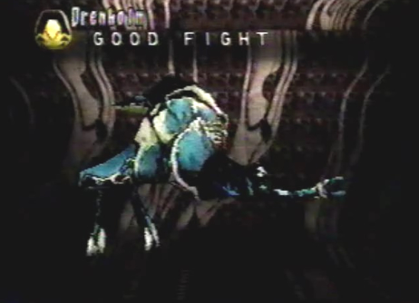
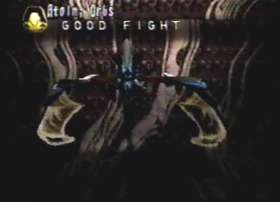

Sub-Boss: Drenholm  |
Strategy The Protect Keys had come to life, revealing the Guardians of Uru. The dragon sensing immediate danger, changed into his Spiritual form. The guardian began the battle by charging up an electrical attack which it then shot into the sky. The attack came down upon us like a thunderstorm. This greatly weakened the dragon. To prevent this attack from taking any more damage again, the dragon used his Vengeance Orbs berserk attack. This attack surrounded the dragon with protective orbs that shielded us from any one attack. We noticed the guardian had two port engines on its left and right sides, keeping it afloat. We flew to the left side of the guardian and took out the first engine with lock-on lasers. The guardian then attacked us with its thunderstorm attack once more. Its attack was of no use, as my dragon's Vengeance Orbs repelled the attack and each orb surrounding us shot outward, striking multiple targets on the guardians body. This was a very good defensive technique. Once the first engine was destroyed, we moved to the right side, taking out the second engine with yet another stream of lock-on lasers. We had taken critical damage to the guardian. A smaller guardian which was connected to the larger one, now had to separate and become a separate unit. The larger guardian now lay lifeless, leaving its rear open for attack. We flew directly behind the helpless guardian and sent a Judgment Day berserk attack at its vulnerable areas. I made sure to recharge the dragon's berserk energy when needed, with Berserk Medis items. The smaller guardian was hovering above us, just waiting for an opportunity to attack. It soon did just that and sent an eye beam which it swung from left to right. This attack landed on the dragon and completely stopped his movement. As the dragon and I lay helpless, unable to move, the flying guardian sent lightning needles at us. These lightning needles encased us, hovering around the dragon's body. We had to think fast or else we would be trapped inside, wide open for the enemy to attack us. Luckily, I brought along items called Free Actions. These items had the ability to free us from our stopped movement. Once the dragon gained his mobility back, we quickly flew out of the encasement of lightning needles. The flying guardian, just as we moved out of the way, sent a thunderstrike beam, that flew within the lightning needles. It just missed us! Without a target, the needles fell into the water. We moved back behind the larger guardian and sent another Judgment Day berserk attack at its weak spots. The flying guardian shot another eye beam, hitting the dragon again with its immobilizing abilities. I just used another Free Action item and the dragon was free to move once more. We flew to the side as the hovering guardian shot out its lightning needles, followed by its thunderstrike beam, which missed its target once more. We made it our priority to keep attacking the stationary larger guardians vulnerable spots, with Judgment Day. Its system soon overloaded, causing the two to finally be destroyed. |
Divine Enemy Info
Normal/Attack Direction None Special Thunderstorm/ALL Eye Beam/ALL Thunderstrike/Varies |
Length 99.0 Ln Height 63.0 Ln Width 72.0 Ln Weight 24640 Kn Dynes 600 Dn Exp Pts 1120 EXP Items Elixir Medis Berserk Minor |
Boss: Atolm, Orbs  |
Strategy After confirming the last Protect Key at the Black Ruins, we attempted to fly into the portal it opened. Before we could enter the portal we were attacked by that girl and her dragon yet again. Upon engaging the girl and her black dragon in battle, my dragon changed into his Spiritual form. Hovering over the black dragon, were many different orbs. My dragon immediately flew in front of them and used his newly learned Armageddon berserk attack. The orbs blew apart descending to the watery depths below. The black dragon soon attacked us with its laser fire. It was time to take some serious damage to its weak spot, located to its rear. My dragon, in an attempt to boost up his laser power as much as possible for his upcoming attack, changed into his Attack form. Soon after, the girl yelled "Ne-Rai." We knew what that meant from our last encounter with her. We quickly flew to the front of the black dragon as its rage of berserk lasers flew throughout the sky. After the coast was clear, we flew to the black dragon's rear and my dragon fired multiple lock-on lasers at its tail. We did this continually taking a massive amount of damage. Just as we were getting close to defeating the duo, the black dragon shot an unavoidable lightning storm, hitting my dragon with pin point accuracy. My dragon was fatally injured. With his last ounce of energy, my dragon fired another array of lock-on lasers, taking out the black dragon once more. |
Divine Enemy Info
Normal/Attack Direction Laser/ALL Special Warp/Back Berserker Rage/Back, Left and Right Lightning Storm/ALL |
Length 61.2 Ln Height 18.0 Ln Width 54.0 Ln Weight 20400 Kn Dynes 0 Dn Exp Pts 1680 EXP Items Elixir Maxis Berserk Medis |